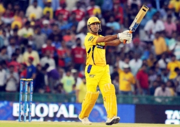
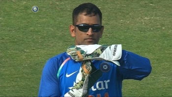
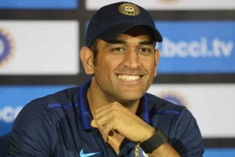

Born on July 7, 1981, in Ranchi, Jharkhand, MS Dhoni's journey from a small-town boy to cricketing sensation is a testament to his dedication and love for the game. His humble beginnings were marked by unwavering determination and an insatiable hunger for success. In the annals of cricket history, Mahendra Singh Dhoni, fondly known as "MS Dhoni," stands as a symbol of leadership, resilience, and unshakable calmness. Dhoni's family, including his wife Sakshi and daughter Ziva, played an integral role in his life. His strong family values and commitment to them were endearing to fans. He is not just a cricketing legend but also a loving husband and doting father.
Under Dhoni's leadership, the Indian cricket team achieved the number one ranking in Test cricket, a feat that had been elusive for many years. His captaincy also saw India become a dominant force in One Day Internationals (ODIs) and T20 Internationals (T20Is), with the team consistently ranked among the top teams in the world. Throughout his career, Dhoni received numerous awards and honors, including the Rajiv Gandhi Khel Ratna, India's highest sporting honor, and the Padma Shri, one of India's highest civilian awards. His contributions to cricket were acknowledged not just by the cricketing fraternity but by the entire nation.
MS Dhoni's leadership qualities were evident from the moment he was entrusted with the captaincy of the Indian cricket team. Under his captaincy, India reached unprecedented heights, winning major tournaments, including the 2007 ICC World Twenty20, the 2010 and 2016 Asia Cups, and the crowning glory of Indian cricket—the 2011 ICC Cricket World Cup. His calm demeanor under pressure earned him the moniker "Captain Cool." MS Dhoni's impact on the game of cricket extends beyond the field. He inspired countless youngsters to take up cricket and strive for excellence. His unique leadership style, characterized by calmness under pressure, has been studied and admired by leaders in various fields.
Dhoni's prowess with the bat was unparalleled. He was the finisher, the man who could turn a game on its head with his calculated aggression and incredible composure during tense run-chases. His iconic helicopter shot became a symbol of his batting genius, and his ability to control the game's tempo made him a cricketing legend. Mahi is famously known as Dhoni Review System by his fans.
Beyond his on-field heroics, MS Dhoni's role as a mentor and guide to young talents has been invaluable. His leadership extended beyond the cricket pitch, as he nurtured future stars and instilled in them the values of hard work, dedication, and sportsmanship. Dhoni's charisma and humility endeared him to fans worldwide. Whether it was his love for motorcycles or his passion for the armed forces, Dhoni's off-field persona added depth to his legend. His unwavering support for various social causes further solidified his status as a role model.
In August 2020, MS Dhoni bid farewell to international cricket, leaving behind a legacy that will be cherished for generations to come. His contributions to Indian cricket will always be celebrated and remembered with great fondness. After retiring from international cricket, MS Dhoni remained connected to the sport as the captain of the Chennai Super Kings in the Indian Premier League (IPL). His influence extended to various business ventures, including the ownership of the Ranchi-based Jharkhand cricket team and a thriving career in the entertainment industry.
As we bid farewell to our beloved 'Thala,' we do so with gratitude in our hearts for the memories, the victories, and the indomitable spirit he shared with us. MS Dhoni's legacy is a shining example of what can be achieved with talent, hard work, and an unshakeable belief in oneself.